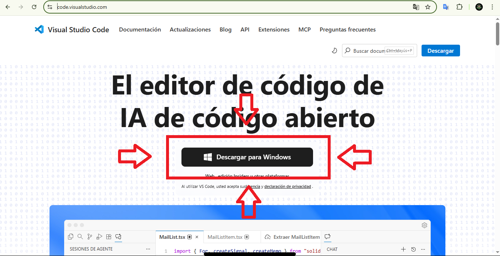
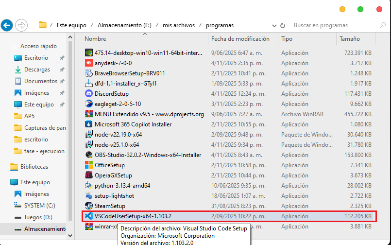
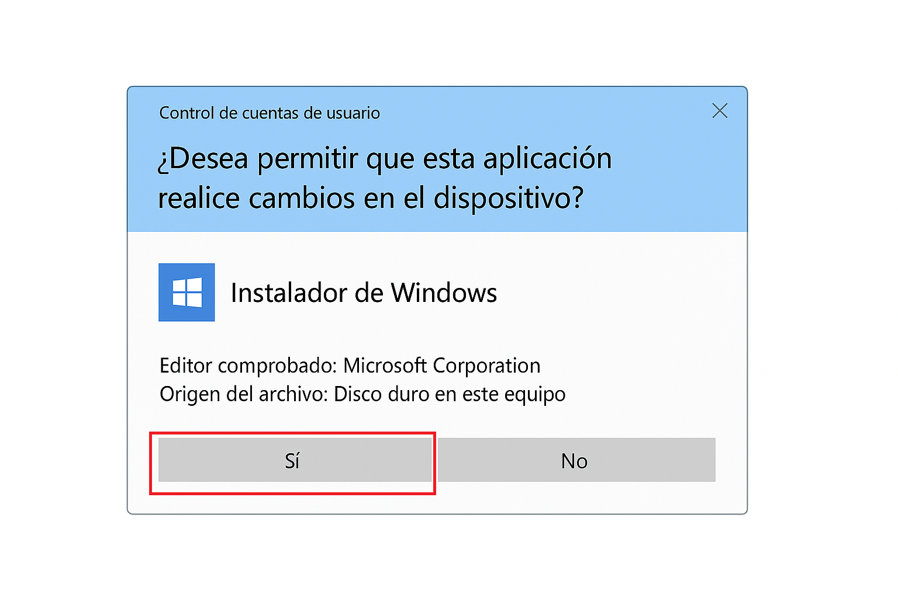
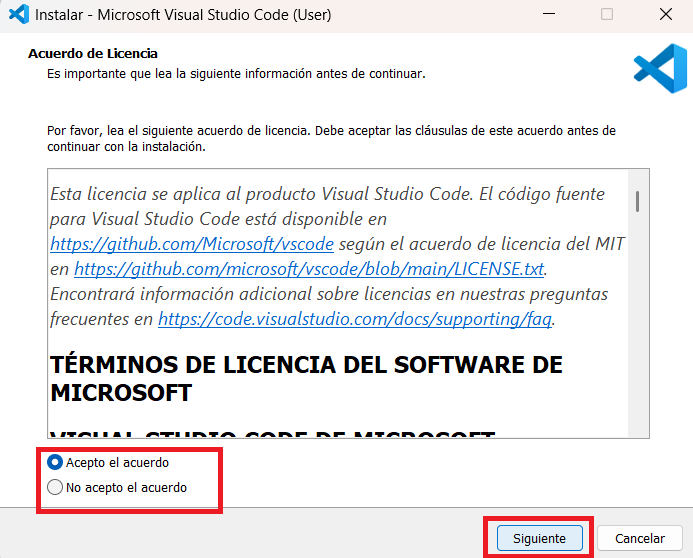

Tutorial:
Cómo instalar Visual Studio Code
1. Descargar Visual Code

Visual Studio Code, comúnmente conocido como VS Code, es un editor de código gratuito y liviano que ha surgido rápidamente como una de las herramientas más populares para desarrolladores de todos los niveles en una variedad de lenguajes de programación
Para descargar Visual Studio Code, primero debes ir al sitio oficial del programa
CLICK AQUÍ.
En la página encontrarás un botón llamado “Download for Windows”
(o la versión que corresponda a tu sistema operativo).
Haz clic en ese botón para iniciar la descarga.

2. Abrir el instalador
Una vez que hayas descargado el archivo de instalación de Visual Studio Code, generalmente llamado VSCodeUserSetup.exe, debes buscarlo en la carpeta donde se guardan tus descargas. Haz doble clic sobre el archivo para abrir el instalador. 
3. Aceptar permisos
cuando abras el instalador, windows podría mostrar un mensaje preguntando si deseas permitir que el programa realice cambios en tu dispositivo. Este mensaje es normal en la instalacion de cualquier software confiables. Haz clic en "Sí" para continuar con la instalación. 
4. Finalizar instalación
Después de aceptar los permisos, se abrirá la ventana principal del instalador de
Visual Studio Code. Aquí deberás:
1. Aceptar los términos y condiciones de uso.

2. Elegir la carpeta donde se instalará el programa.
 4. Finalmente, haz clic en "Install" para comenzar la instalación.
El proceso tomará unos segundos.
4. Finalmente, haz clic en "Install" para comenzar la instalación.
El proceso tomará unos segundos.